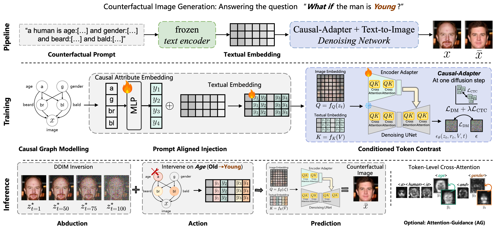

Key Insights and Figures
Method

We propose Causal-Adapter, a simple yet module that plugs into a pretrained text-to-image diffusion model to generate faithful counterfactual images. Given an input image and an intervention specified by a causal graph and semantic attributes, Causal-Adapter injects causal signals into the text conditioning (via prompt-aligned injection) and is trained with reconstruction and contrastive objectives to disentangle attributes and reduce spurious correlations. At inference, intervened attributes update the conditioning to produce counterfactuals, with optional attention guidance for localized edits while preserving non-intervened identity cues.
BibTeX
@article{tong2025causal,
title={Causal-Adapter: Taming Text-to-Image Diffusion for Faithful Counterfactual Generation},
author={Tong, Lei and Liu, Zhihua and Lu, Chaochao and Oglic, Dino and Diethe, Tom and Teare, Philip and Tsaftaris, Sotirios A and Jin, Chen},
journal={arXiv preprint arXiv:2509.24798},
year={2025}
}